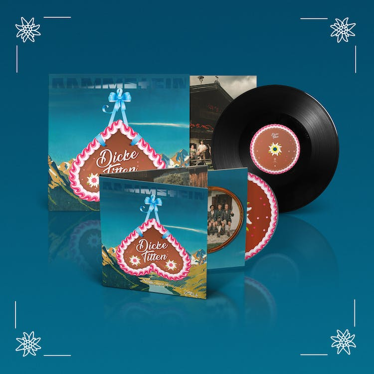

GIRA EUROPEA DE ESTADIOS 2024
¡Rammstein también tocará en los estadios de Europa en 2024! La preventa general para todas las fechas comenzará el miércoles 18.10.2023 a las 11:00 h CEST. Los miembros LIFAD tendrán acceso anticipado a una preventa exclusiva de entradas a partir del lunes, 16.10.2023, 11:00 h CEST al martes, 17.10.2023, 11:00 h CEST.
Gira de Estadios Europea de Rammstein 2024
- 11.05.2024 Chequia, Praga, Aeropuerto Letňany
- 15.05.2024 Alemania, Dresde, Rinne
- 16.05.2024 Alemania, Dresde, Rinne
- 24.05.2024 Serbia, Belgrado, parque Ušće
- 30.05.2024 Grecia, Atenas, to be announced soon
- 05.06.2024 España, San Sebastián, Estadio Anoeta
- 08.06.2024 Francia, Marsella, Orange Vélodrome
- 11.06.2024 España, Barcelona, Estadio Olímpico
- 15.06.2024 Francia, Lyon, Groupama Stadium
- 18.06.2024 Países Bajos, Nimega, Goffertpark
- 23.06.2024 Irlanda, Dublín, RDS Arena
- 27.06.2024 Bélgica, Ostende, parque Nieuwe Koers
- 05.07.2024 Dinamarca, Copenhague, Valbyparken
- 17.07.2024 Austria, Klagenfurt, Wörthersee Stadion
- 18.07.2024 Austria, Klagenfurt, Wörthersee Stadion
- 21.07.2024 Italia, Reggio Emilia, RCF Arena (Campovolo)
- 26.07.2024 Alemania, Gelsenkirchen, Veltins-Arena
- 27.07.2024 Alemania, Gelsenkirchen, Veltins-Arena
DU HAST [OFFICIAL VIDEO - 4K VERSION]
"Du hast", Rammstein's most viewed video to this day, can now be watched as a remastered 4k version! The video from 1997 was directed by Philipp Stölzl, and shot in Berlin and Brandenburg. As part of the remastered "Sehnsucht Anniversary Edition", the single "Du hast" is re-released as an exclusive white 7" vinyl on May 17, featuring the new "Spiel mit mir (2023 Mix)" as its B-side. Pre-order here!
SEHNSUCHT ANNIVERSARY EDITION
¡El legendario álbum de estudio de Rammstein publicado en 1997, con los sencillos "Du hast" y "Engel", reaparece el 9 de junio de 2023 como "Sehnsucht Anniversary Edition" remasterizada! La limitada "Sehnsucht Anniversary Edition" aparecerá como CD, LP doble (vinilo blanco o negro), casete, así como en formato digital, inclusive una versión remezclada de la canción "Spiel mit mir". El sofisticado envoltorio fue rediseñado por el diseñador de artwork originario Dirk Rudolph. El CD y vinilo aparecen en un estuche de tapa dura plateado estampado y un folleto de 40 páginas inclusive fotos inéditas de la banda de Gottfried Helnwein.

"ADIEU" SINGLE Y VIDEO
¡Hoy aparece Adieu, el nuevo sencillo del álbum de Rammstein Zeit! De la dirección del vídeo musical Adieu se ha hecho cargo una vez más Specter Berlin, con quien Rammstein ya cooperó para el vídeo de Deutschland. Adieu se grabó en mayo de 2022 en París, poco antes de que la banda partiera para su Gira Europea de Estadios 2022. Adieu se publica como CD de 3 pistas y en vinilo de 10" y ¡ya puede encargarse!
GIRA EUROPEA DE ESTADIOS 2023
¡Rammstein se complace en anunciar que la Gira Europea de Estadios entrará en una nueva ronda en verano de 2023! Las entradas están disponibles aquí.
- 22.05.2023 Lituania, Vilna, Vingio Parkas
- 27.05.2023 Finlandia, Helsinki, Estadio Olímpico
- 28.05.2023 Finlandia, Helsinki, Estadio Olímpico
- 02.06.2023 Dinamarca, Odense, Dyrskueplads
- 07.06.2023 Alemania, Múnich, Estadio Olímpico
- 08.06.2023 Alemania, Múnich, Estadio Olímpico
- 14.06.2023 Eslovaquia, Trenčín, Trenčín Airport
- 23.06.2023 España, Madrid, Estadio Cívitas Metropolitano
- 17.06.2023 Suiza, Berna, Stadion Wankdorf
- 18.06.2023 Suiza, Berna, Stadion Wankdorf
- 26.06.2023 Portugal, Lisboa, Estádio Da Luz
- 01.07.2023 Italia, Padua, Stadio Euganeo
- 06.07.2023 Países Bajos, Groninga, Stadspark
- 11.07.2023 Hungría, Budapest, Puskás Aréna
- 15.07.2023 Alemania, Berlín, Estadio Olímpico
- 16.07.2023 Alemania, Berlín, Estadio Olímpico
- 22.07.2023 Francia, París, Stade de France
- 26.07.2023 Austria, Viena, Ernst-Happel-Stadion
- 30.07.2023 Polonia, Chorzów, Stadion Śląski
- 04.08.2023 Bélgica, Bruselas, King Baudouin Stadium
"DICKE TITTEN" - ¡CD Y 7" VINILO YA ESTÁ DISPONIBLE!
¡Disponible a partir de hoy "Dicke Titten", el cuarto sencillo del nuevo álbum de Rammstein "Zeit", también en CD y vinilo 7"! El videoclip del sencillo ya apareció el 25 de mayo en el canal de YouTube oficial de la banda.
